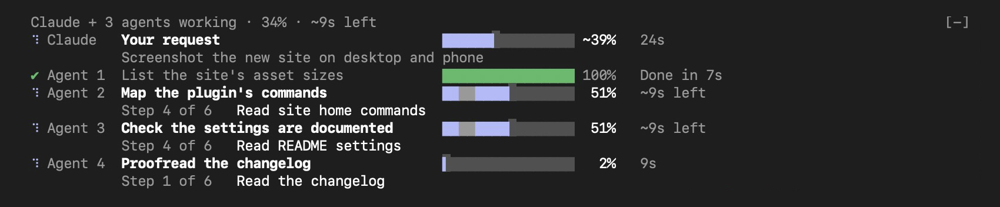
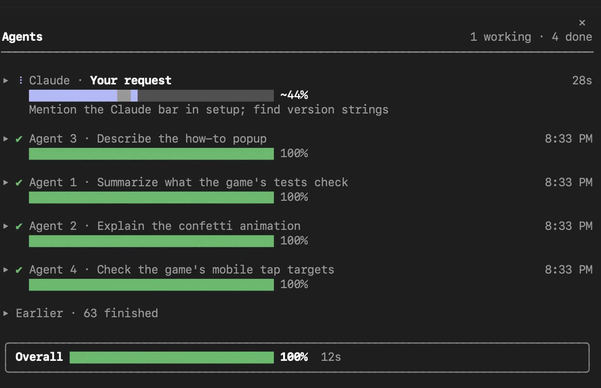
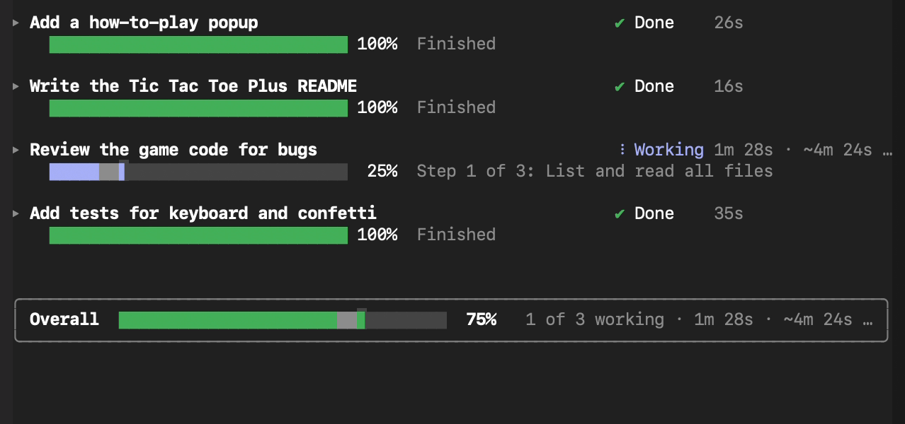
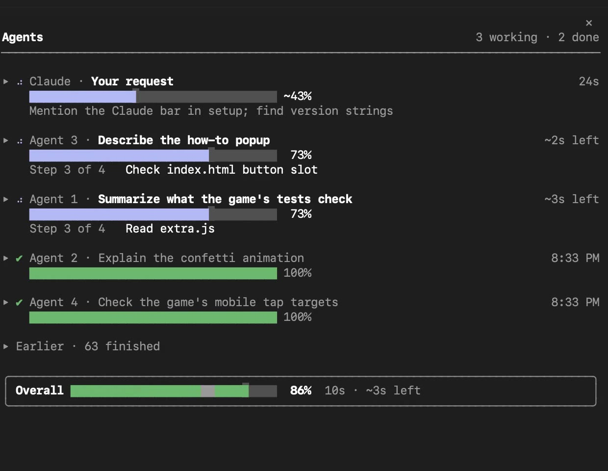

A plugin for Claude Code
See what your agents are doing.
A live bar for Claude and every agent it starts: what each is doing in plain words, how far along it is, and how long is left.
/plugin install agent-progress --marketplace ishmael07/agent-progress
Recorded in Claude Code. Real agents, real time.
What you'll see
Nothing to set up after installing.
Above the prompt
One line for Claude and one for each agent while they work, with the current step underneath.

The table
One row for Claude and one per agent, with progress and time. Click a row to see how it helps your request, its checklist, and when it ran.

Commands
Optional. Type them in Claude Code.
- /progress
- Show the bars right in the chat and open the table. Works even while Claude is busy.
- /progress explain
- Open every row to show how it helps and its checklist. Run it again to fold them.
- /progress off
- Stop the bars above the prompt from appearing on their own. Remembered next time.
- /progress on
- Turn them back on. /progress toggle flips between the two.
- /progress clear
- Clear finished agents from the list.
- /config
- Turn the step lists, plain-language summaries, bars and the done notification on or off.
How it works
Claude Code doesn't report a percentage for agents, so Agent Progress asks each one for a short plan in plain words and follows it as steps get checked off. The bar moves at the agent's own pace and never jumps ahead of the next step.
Time left appears after an agent finishes its first step, based on how long its steps really take. An agent without a plan gets an estimate, marked with ~.
Cost and privacy. The plan note adds a few tokens to each agent. When an agent doesn't say how it helps, one small Claude Haiku call writes that sentence, through your own Claude Code session. Nothing is sent anywhere else. You can turn off the plan note and the Haiku call in /config.
1.0 → now
A bar for Claude itself, labels, steps on their own line, timestamps and honest time left.

